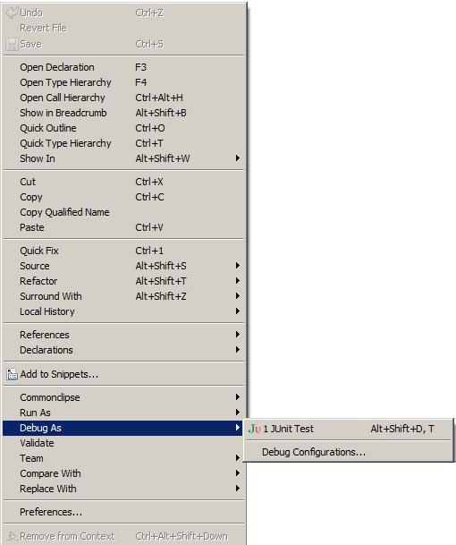
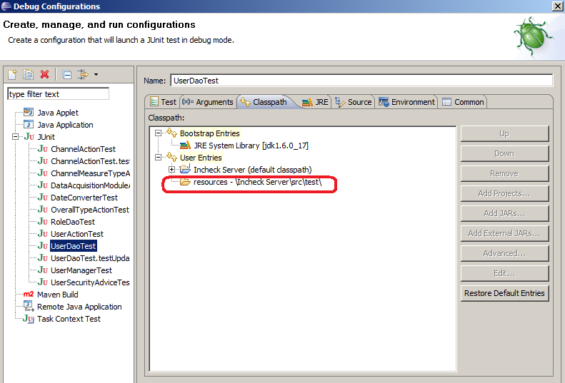

A1. How to install Incheck-NG in DEV Environment?
A2. How to install Incheck-NG in PROD Environment?
A3. How to setup Eclipse?
A4. How to debug Unit tests in Eclipse?
A1. How to install Incheck-NG DEV ?
Install following software:
checkout svn code svn checkout xxxxxxxxxxxxx trunk
create MySQL catalog insite and user "northbrook" with privilegdes to this catalog
Ensure MySQL credentials match .../server/src/main/resources/jdbc.properties and .../server/src/test/resources/jdbc.properties
run create_schema.sql and insert_samples.sql to create and populate DB
To Start application with Jetty "mvn jetty:run-war"
To Start application with Tomcat "mvn cargo:start"
A2. How to install Incheck-NG in PROD Environment?
Install Eclipse
Run 'mvn jetty:run-war' and 'mvn surefire:test' to have all runtime maven libs downloaded
Set M2_REPO classpath variable to point to maven repository - Eclipse->Menu->Window->Preferences->Java->Build Path->Classpath Variables
Eclipse->Menu->File->Existing Project Into Workspace->Select Root directory .../server/
A4. How to debug Unit tests in Eclipse?

You need to add test resources to classpath
